3.壁との衝突
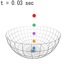
この章のシミュレーション（クリックで計算開始）：
弾性衝突による速度
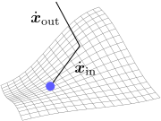
壁面との衝突を含むボールの運動

ただし、ボールの弾み方は、ボールや壁の素材によって異なり、よく跳ねるものもあれば、そうでないものもある。そのため、「弾みやすさ」を決めてやらないと
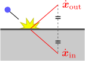
弾性衝突での速度の変化は、直感的に分かる。即ち、右図のように、入射速度
弾 性 衝 突 公 式 の 導 出 壁 の 定 式 化 ボ ー ル の 運 動 の 計 算
衝突では速度が瞬間的に変化するので、（速度の変化率である）加速度
3.1弾性衝突公式(
反射速度
平らな硬い床に、よく弾むボールを垂直に落としてみる。すると、経験的に分かるように、衝突の前後でボールの運動方向は反転するが、速さは変わらない。一方、斜めにぶつけた場合、反射速度
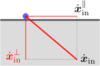
これを数式で表すためには、右図のように、入射速度
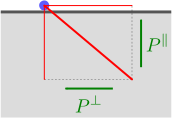
各成分
式
【3.1-注1】正射影行列：式(
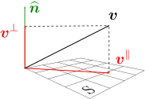
右図のように、任意のベクトル
補足
【3.1-注2】内積と外積
2つのベクトル
逆に、
補足
外積の例として、式(
内積は
弾性衝突の力学的条件：ダランベールの原理(
弾性衝突公式(
壁に衝突したボールが速度
ダランベールの原理(
【3.1-注3】弾性衝突公式(
導出
3.2壁の定式化
この節では、まず、壁の形状の表現方法(
拘束条件(
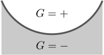
壁面の法線ベクトル
記号
壁面に垂直なベクトル
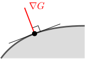
後は、拘束条件
ところで、
【3.2-注1】曲面に垂直なベクトル
ある曲面が
導出
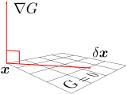
曲面上の2点
【3.2-注2】多変数関数の1次近似：式(
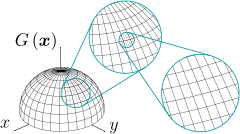
右図のように、2変数
平面のグラフは一般に1次関数（
補足
[1] 式(
弾性衝突公式（完成版）：式(
以上により、反射速度
3.3ボールの運動
この節では、まず、計算方法についてまとめる。その後、いくつかの例に対して、具体的な計算を行う。
衝突を含む運動
さて、もともと知りたかったのは、衝突を含むボールの運動
なお、初期値の取り方によっては、壁に接触したまま、壁に沿うように運動する場合も考えられる。その場合は、衝突が一瞬で終わるという暗黙の仮定が成立しないので、これまでの議論が使えない。実際、式(
球・円と衝突する場合：式(
半径
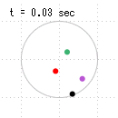
これを用いて数値計算を行うと、右図のようになる。円・球の半径
【3.3-注1】
位置ベクトル
導出
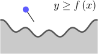
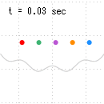
例えば、
ところで、衝突は計算誤差を増大させる性質を持つ。というのも、衝突により、位置の微妙なずれが運動方向のずれを生じさせるからである（床が湾曲している場合）。そのため、すぐに誤差が無視できなくなり、計算が意味をなさなくなってしまう。実際、上のシミュレーションでも、（計算のステップ幅